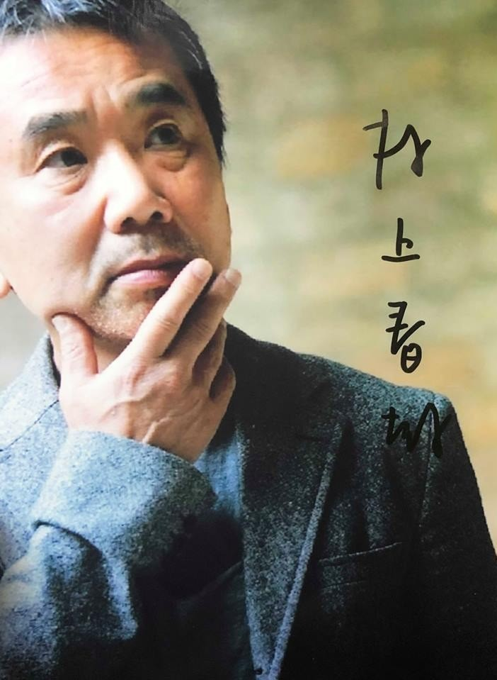
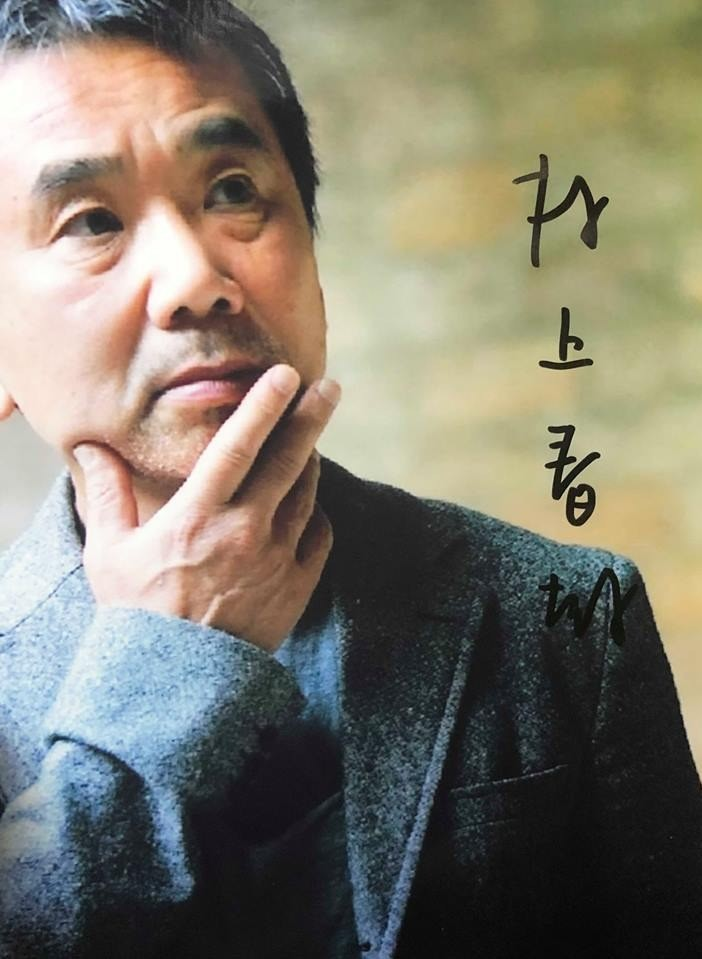
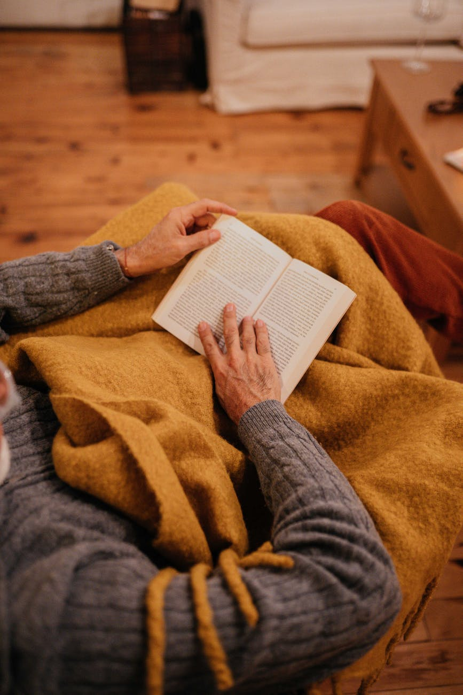
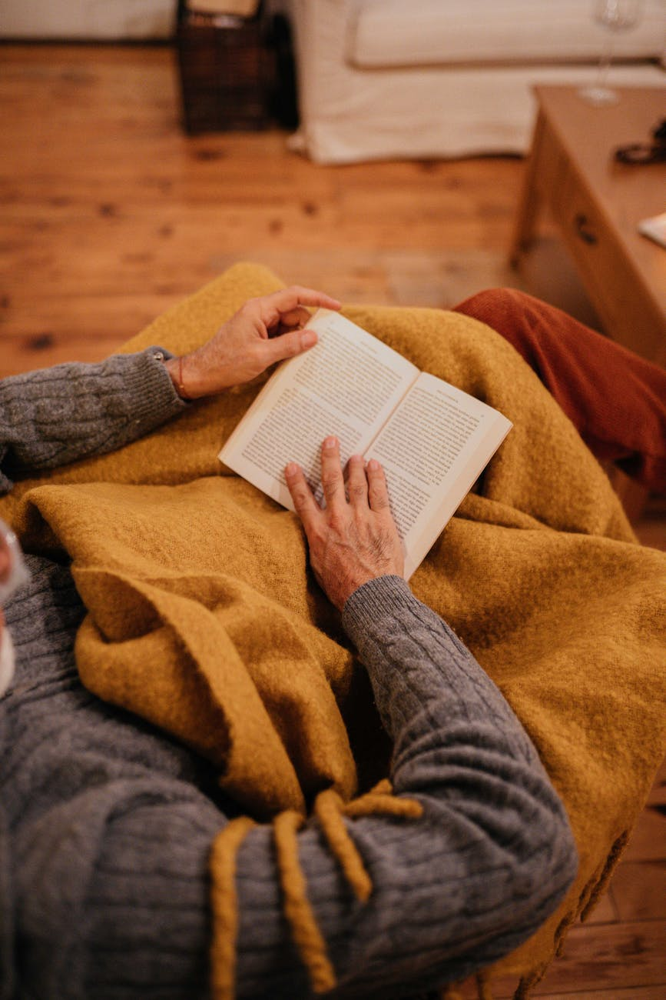

What I Talk About When I Talk About Running: A Memoir By Haruki Murakami
Born to Run by By Christopher McDougall
Can’t Hurt Me by David Goggins
Shoe Dog by Phil Knight
Non Runner’s Marathon Running Guide by Dawn Dais
Eat and Run By Scott Jurek
I’ve read a few Murakami novels and picked up this book in part because I was curious about his take on non fiction and also, curious about his private passion for running. Over the span of his writing career, this guy has also run over 20 marathons and even an ultramarathon! This book is about how his two passions for running and creative work influence each other.
Of all the books on this list, this book was the one that made me the most proud of being a runner. It inspires you to run with stories about how the sport is about defying your limitations.
Running is more a mental test than an athletic endeavor. David Goggins is an ultrarunner, navy seal, and triathlete. He talks about how mental perseverance carried him through the toughest challenges in his life, both on and off the running trails.
I love autobiographies, especially if they are from entrepreneurs, and so a book about the origin story of a company that I admire and that just so happens to be one of the most respected athletic and running companies in the world, is my ideal book.
This is the book that got me into marathon running. If you follow everything in this book, you will run your first marathon, guaranteed.
Scott Jurek is the most famous ultrarunner of his generation. This book combines practice plant-based recipes that fuel his runs with stories about his running journey and how he trains his mind to keep pushing on 100, 200 mile runs. Dude’s insane and inspirational.


 

 


Images courtesy of Pexels.com